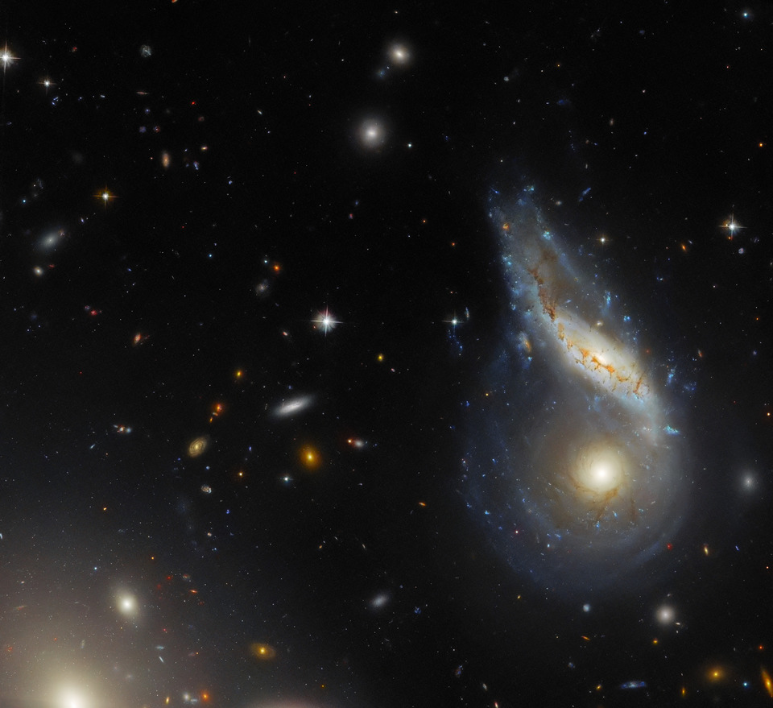

AstroSpace
AstroSpaceCaptan una colisión galáctica en curso que alimenta un cuásar hiperluminoso
La fusión de dos gigantescas galaxias espirales canaliza enormes cantidades de gas hacia el centro, despertando a un agujero negro durmiente.

Fuente: NasaLas fusiones galácticas son algunos de los espectáculos más grandiosos del universo. Recientemente, un equipo de astrónomos combinó observaciones en múltiples longitudes de onda para detallar cómo la interacción gravitacional entre dos galaxias distantes ha comprimido millones de años luz de gas interestelar.
Este flujo masivo de materia hacia el corazón del sistema ha revitalizado el núcleo galáctico activo, convirtiéndolo en un cuásar capaz de eclipsar el brillo combinado de miles de millones de estrellas ordinarias.
"Las colisiones galácticas no son solo cementerios estelares, sino gigantescos viveros de estrellas y motores de energía extrema."
El análisis detallado de este proceso ofrece una maqueta natural de lo que le sucederá a nuestra propia galaxia, la Vía Láctea, cuando colisione con Andrómeda dentro de miles de millones de años.